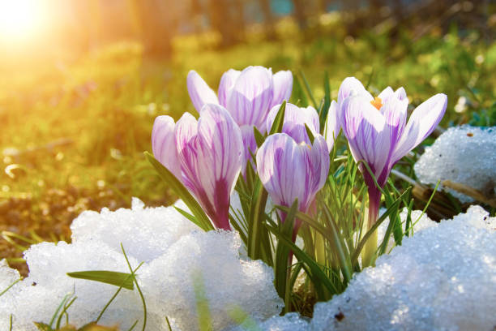

Spring is one of the four temperate seasons, following winter and preceding summer. It is characterized by the transition from cold to warmer weather, with increasing daylight hours and the blooming of flowers and trees.

Temperature Transition: Spring marks the transition from the cold temperatures of winter to the warmer temperatures of summer. Days gradually become longer, and temperatures begin to rise.
Blooming Nature: One of the most noticeable features of spring is the blossoming of flowers, trees, and plants. This burst of color and life is a result of increased sunlight and warmer temperatures, triggering the growth and flowering of vegetation.
Renewal and Rebirth: Spring symbolizes renewal and rejuvenation, as dormant plants begin to awaken, and animals emerge from hibernation. It's a time of growth and new beginnings in nature.
Weather Variability: Spring weather can be highly variable, with sudden changes in temperature, rain showers, and occasional storms. This variability is influenced by factors such as atmospheric pressure systems and the lingering effects of winter.
Outdoor Activities: With milder temperatures and longer daylight hours, spring is an ideal time for outdoor activities such as hiking, picnicking, gardening, and sports. It's a popular season for people to enjoy nature and engage in recreational pursuits.
Cultural and Religious Celebrations: Many cultures and religions celebrate festivals and holidays during the spring season, often associated with themes of rebirth, renewal, and fertility. Examples include Easter, Passover, and various spring equinox celebrations.
Ecological Significance: Spring plays a crucial role in the ecological balance of ecosystems, as it supports the reproduction and growth of plants, which in turn provide food and habitat for animals. It's a critical time for pollinators such as bees and butterflies.
Overall, spring is a season of transition, growth, and anticipation, as nature awakens from its winter slumber and bursts forth with vibrant energy and color.